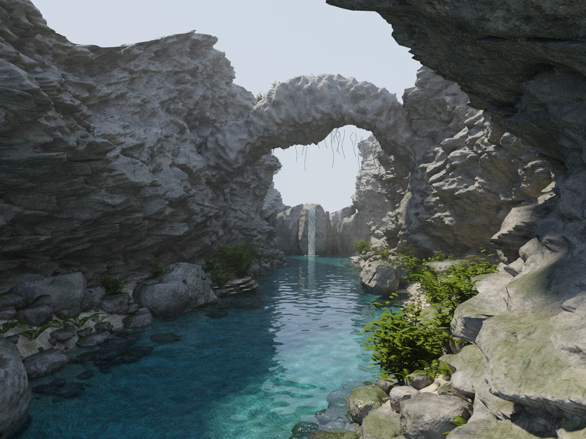

A shared visual language
Scenes supplies spectral transport and material recipes; GEO contributes rock geometry and the sunlight-to-water connection; Elements reconstructs water geometry; Light supplies the interface index.
Independent work in
geometry, motion,
light & sound.
 View render ↗
View render ↗A flooded volcanic gorge with a natural rock bridge, submerged shorelines, rooted vegetation and a distant cascade.
View render ↗Scenes supplies spectral transport and material recipes; GEO contributes rock geometry and the sunlight-to-water connection; Elements reconstructs water geometry; Light supplies the interface index.
 View render ↗
View render ↗ View render ↗
View render ↗ View render ↗
View render ↗ View render ↗
View render ↗ View render ↗
View render ↗ View render ↗
View render ↗ View render ↗
View render ↗Fractured walls frame a channel of turquoise water. Carbonate shelves, eroded boulders, ferns and shrubs create changes in scale. Waves are deterministically authored geometry for the still.

View render ↗The gallery retains the finished image, earlier compositions, lighting studies and an unfiltered image. Process views are labeled so the development can be followed without confusing them with final deliverables.
IMAGE / RECONSTRUCTION
Move the divider to inspect reconstruction against the retained unfiltered image. The viewer uses reduced-size previews; both native files are linked below.
FINISHEDUNFILTEREDPROJECT RECORDS
Values below come from the retained project reports. The original runs have not been rerun for this portfolio; open each artifact to inspect its scope.
Artifact preview · Open complete JSON ↗ (source unavailable)
{
"finite_radiance": true,
"raw_exr_bit_exact_to_pfm": true,
"nonfinite_paths": 0,
"bvh_comparison_rays": 3000,
"aov_sum_max_abs_error": 2.384185791015625e-06,
"size": [
2048,
1536
],
"native_render_seconds": 895.789001,
"reconstruction_seconds": 145.6352972984314,
"source_sha256": {
"build_scene.py": "f4cccf8242102cbca278430a7a11be3e0d49cbeadb6b51bd96f7e7e71c6b8d58",
"prepare_engine.py": "a43bbec798d5f98f2b5d1139de782b8d5fd7140f970a8b4132af062b8c6b5baf",
"water_field.h": "9ea5b1cde74b73824c54c7554d26a433037d1c4950b57f479fe3f452f328e757",
"geo_water_connection.h": "293db43b715d37fa74c0fc93e1f2fea5bc9d3b5da57bc92044d083849e4de8cc",
"engine.cpp": "2180b06d91b62f2ce90cb92209a6dedce42ea1aff3a0ce2e8c2d115941931d55",
"finish.py": "265d6c1eb22815234011097864cbe96de021480527abb19f2e0507547b8ee4f5"
},
"repository_revisions": {
"cybr-scenes": "bc0d88b5f385f9234863770ada3f888b169a05bb",
"cybr-geo": "7f246ebc78cbedf46ee3319c5e062a5313f6e789",
"cybr-elements": "280770daa8b78274339d26ad45a58f62aeeda39b",
"cybr-light": "38f29ee2f6559311513c1f570be7a36224194ce8"
},
"water_closed": true,
"image_generation": false,
"upscaling": false,
"review": "See REVIEW.md for visual observations, separate from numeric validation.",
"visual_review": {
"full_frame": "renders/caldera-preview.jpg",
"native_foreground_crop": "renders/detail-review.jpg",
"completed": true,
"transmitted_guides_used": true,
"transmitted_guides_retained": false,
"remaining_visible_limits": [
"Fine water glints",
"Some close-range rock faceting",
"Authored still cascade"
]
}
}Artifact preview · Open complete JSON ↗ (source unavailable)
{
"passed": true,
"white_furnace_maximum": 0.828570664,
"portal_pdf_integral": 0.998627288,
"fresnel_normal": 0.0400000028,
"quartz_ior_400": 1.55773079,
"quartz_ior_700": 1.54061353
}Artifact preview · Open complete JSON ↗ (source unavailable)
{
"renderer": "CYBR Sunken Caldera / Scenes + GEO transport + Elements surfaces + Light optics",
"width": 2048,
"height": 1536,
"max_depth": 12,
"threads": 14,
"seed": 71833,
"view": "hero",
"seconds": 895.789001,
"triangles": 3443770,
"spectral_bands": 16,
"dispersion": false,
"fog_density_m_inverse": 0.00249999994,
"camera": [
2.29999995,
-15,
3.5999999
],
"target": [
-0.5,
10,
4
],
"horizontal_fov_degrees": 68,
"aperture_radius_m": 0,
"exposure": 0.949999988,
"film_white_rgb": [
1.04490995,
0.984612584,
1.02078414
],
"nonfinite_paths": 0,
"clamped_path_contributions": 0,
"image_generation": false,
"texture_synthesis": "deterministic mathematical material maps, no learned model",
"spectral_method": "16 fixed midpoint bins; common-random-number splitting at first dielectric interface; CYBR LIGHT Cauchy water IOR",
"polarization_and_birefringence": false
}Artifact preview · Open complete MD ↗ (source unavailable)
# Visual iteration record The user's references established the target: detailed natural landforms, foreground dressing, coherent water/terrain boundaries, and depth created by lighting and geometry. 1. **Preview 01:** rejected evenly spaced cliff strata, striped ripples, excess haze, and chromatic water sampling artifacts. 2. **Preview 02:** retained unequal fracture blocks and mixed-direction waves. Rejected overly blue rock and poorly illuminated submerged terrain. The dark water exposed a missing underwater sunlight sampling path, not a need for painted color. 3. **Preview 03:** retained recovered GEO Snell connections against the Elements-reconstructed water mesh; underwater stones and transmitted sunlight became visible. Retained a less regular bridge cross-section and rooted shrubs. 4. **Preview 04:** retained warmer mineral color. Rejected cascade placement above the distant cliff. 5. **Preview 05:** retained the cascade emerging from a modeled rock face, with its base in the basin. Camera and geometry frozen for the full-resolution render. The native checks are separate from this visual review. They establish finite transport, BVH equivalence and refraction-connection accuracy; they do not measure artistic quality or establish that the scene is superior to the user's references. Final inspection covered the complete 2048 × 1536 frame at a 1500-pixel review size and a native-resolution 1018 × 786 foreground crop. The final image retains submerged stone silhouettes, shaded cliff relief, distinct fern fronds, lit shoreline vegetation and the corrected cascade placement. Fine water glints and some close-range rock faceting remain visible. The waterfall is an authored still surface. Native rendering took 895.789 seconds; reconstruction took 145.635 seconds. All 3,000 BVH comparison rays and 40 sampled Snell connections passed. There were zero nonfinite paths. The raw EXR is bit-identical to the PFM radiance; direct + indirect + volume differs from the full buffer by at most 0.000002385 in scene-linear RGB. These are integrity checks, not an artistic ranking. The transmitted guide was used in reconstruction and then removed to recover disk space. It is reproducible using the documented `--guides-only` command. The full radiance and component PFM buffers are retained, as are the final and unfiltered images and scene-linear EXR.